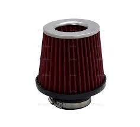
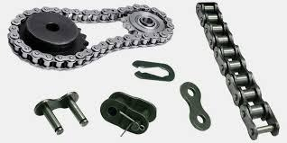
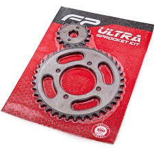
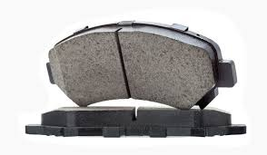
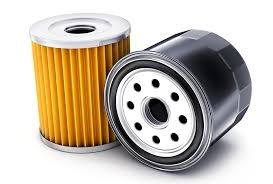
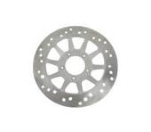
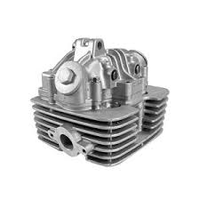

Evita que el polvo entre al motor y mejora el rendimiento
Q 80.00 Comprar
Transmite una mejor fuerza del motor a la rueda trasera.
Q 300.00 Comprar
Sistema completo de tracción para un mejor desempeño.
Q 500.00 Comprar
Permiten tener un frenado aún mejor de forma segura y eficiente.
Q 150.00 Comprar
Originales, ayuda a limpiar el aceite del motor mucho mejor.
Q 90.00 Comprar
Originales, hacen que la moto tenga un mejor control de freno.
Q 300.00 Comprar
Fabricada bajo estrictos estándares de calidad.
Q 900.00 Comprar